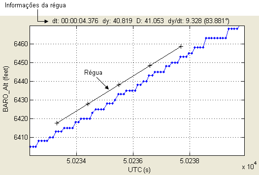
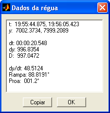

| Menu Exibir |
|
A régua é uma
linha apresentada no
gráfico principal que pode ter suas extremidades movidas pelo usuário
com o
mouse. Enquanto a régua estiver habilitada, o título do gráfico
apresentará as
informações relativas ao posicionamento da régua, como distâncias e
declinação.
Para habilitar
a exibição da
régua, selecione a opção “Exibir ► Régua” ou
clique no botão  na
Barra de Ferramentas. Para desabilitar, desselecione
a opção ou clique novamente no botão.
na
Barra de Ferramentas. Para desabilitar, desselecione
a opção ou clique novamente no botão.

As extremidades
da régua podem ser
alteradas pelo usuário usando o mouse. Para isso, clique com o botão
esquerdo
sobre uma das extremidades e arraste-a até a posição desejada.
As seguintes
informações são
apresentadas na parte superior do gráfico e atualizadas à medida que o
usuário
move as extremidades da régua:
|
Informação |
Descrição |
| dx ou dt |
Amplitude da
régua no eixo x. |
| dy |
Amplitude da
régua no eixo y. |
| D |
Distância entre
as duas extremidades da régua (considerando que as unidades dos
parâmetros x e y sejam iguais). |
| dy/dx ou dy/dt |
Declinação da
reta (derivada). |
| Rampa (°) |
Ângulo de
inclinação da reta (considerando que as unidades dos parâmetros x e y
sejam iguais). |
Caso o parâmetro x seja reconhecido como tempo e a opção “Mostrar tempo como HH:MM:SS” no menu “Opções” estiver selecionada, o valor será apresentado em formato de tempo.
Menu
dos Dados da Régua
Ao clicar com o
botão direito do mouse sobre os dados da régua (na parte
superior do gráfico),
surgirá um menu com as opções “Copiar” e “Detalhes”.
Copiar Dados
Ao clicar nessa
opção os dados serão copiados como texto para
a Área de Transferência do Windows, de onde pode ser colada em qualquer
aplicativo editor de texto.
Detalhes
Ao clicar nessa
opção será apresentada uma janela com os
detalhes dos dados da régua.
|
Informação |
Descrição |
| x ou t |
Valores das
extremidades da régua no eixo x. |
| y |
Valores das
extremidades da régua no eixo y. |
| dx ou dt |
Amplitude da
régua no eixo x. |
| dy |
Amplitude da
régua no eixo y. |
| D |
Distância entre
as duas extremidades da régua (considerando que as unidades dos
parâmetros x e y sejam iguais). |
| dy/dx ou dy/dt | Declinação da reta (derivada). |
| Rampa (°) |
Ângulo de
inclinação da reta (considerando que as unidades dos parâmetros x e y
sejam iguais). |
| Proa (°) |
Proa
verdadeira da reta (considerando que as unidades dos
parâmetros x e y
sejam distâncias nos eixos Leste e Norte). |

O número de
segmentos da régua
pode ser alterado pelo menu
“Opções
► Segmentos
da régua ...”.
Por default, o R_DAT sempre inicia com a
exibição da régua
desabilitada.
| |
Barra
de Ferramentas |
Linha de
sincronismo |
|